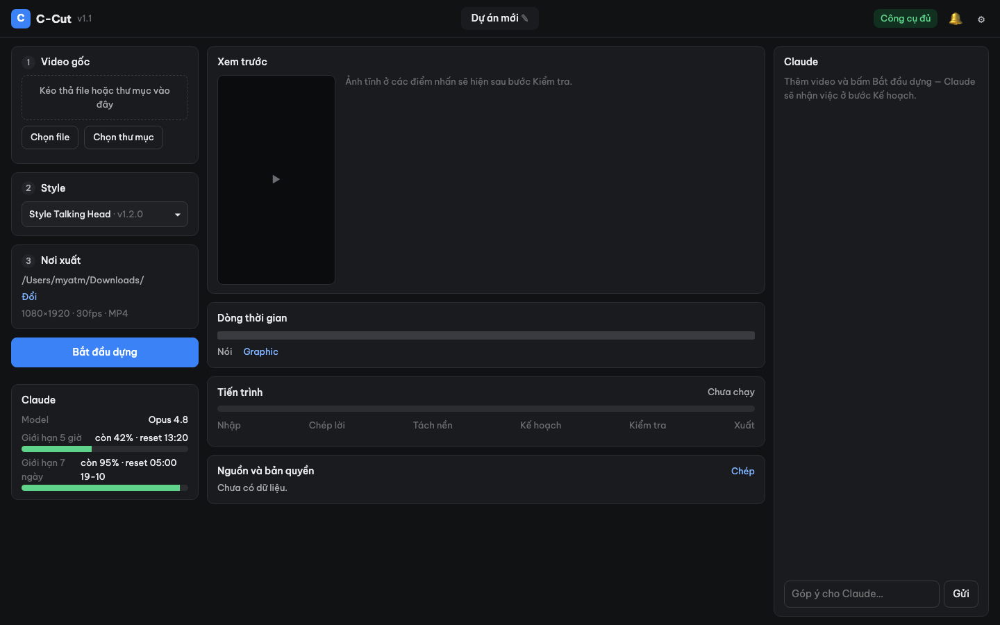

Hướng dẫn sử dụng · phiên bản 1.2 · Style Talking Head 1.2.0
App dựng video talking head bất động sản tự động, chạy trên máy của bạn.
1. Cài đặt
| Máy | File cài | Cách cài |
|---|
| Mac chip M (M1–M4…) | C-Cut-mac-arm64.dmg | Mở file .dmg → kéo C-Cut vào thư mục Applications. |
| Mac chip Intel | C-Cut-mac-intel.dmg |
| Windows 10/11 64-bit | C-Cut-Setup.exe | Chạy file → Tiếp → Cài. Không cần quyền quản trị. |
Không biết máy Mac dùng chip gì? Bấm menu Apple (góc trên trái) → Giới thiệu về máy Mac này: dòng “Chip Apple M…” là chip M, dòng “Bộ xử lý Intel…” là Intel.
Lần đầu mở app có thể bị chặn vì app chưa đăng ký chữ ký số:
• Mac: chuột phải vào C-Cut trong Applications → Mở → Mở. Nếu vẫn bị chặn: Cài đặt hệ thống → Quyền riêng tư & Bảo mật → kéo xuống bấm Vẫn mở.
• Windows: nếu hiện màn hình xanh “Windows protected your PC”, bấm More info → Run anyway.
Cần trống ít nhất 10 GB ổ đĩa (app ~1 GB, model chép lời ~3 GB, phần còn lại cho dự án). Nên dùng máy RAM 8 GB trở lên.
2. Thiết lập lần đầu
Lần đầu mở, C-Cut hiện bảng Thiết lập lần đầu. Python, ffmpeg, font, SFX và style đã có sẵn trong app — chỉ còn:
- Cài Claude Code — “bộ não” lên kế hoạch dựng. Bấm Mở cửa sổ cài đặt, một cửa sổ Terminal (Mac) / PowerShell (Windows) chạy lệnh cài, chờ đến khi báo xong.
- (Chỉ Windows) Cài Git for Windows — Claude Code cần. Bấm nút tương ứng, hoặc tải tại git-scm.com.
- Đăng nhập Claude — bấm Đăng nhập, trình duyệt mở trang Claude, đăng nhập và bấm cho phép. Cần tài khoản Claude trả phí (Pro hoặc Max).
- Tải model chép lời (~3 GB, một lần) — bấm Tải ngay và chờ thanh tiến trình chạy hết.
Làm xong bấm Kiểm tra lại, đủ 4 dấu ✓ thì bấm Bắt đầu dùng. Muốn mở lại bảng này: biểu tượng ⚙ → Công cụ → Thiết lập lần đầu…
3. Màn hình chính

| Vùng | Dùng để |
|---|
| 1 · Video gốc | Kéo thả hoặc Chọn file / Chọn thư mục clip đã quay. |
| 2 · Style | Chọn style dựng (mặc định Style Talking Head). |
| 3 · Nơi xuất | Thư mục lưu video hoàn chỉnh (1080×1920, 30fps, MP4). Bấm Đổi để chọn chỗ khác. |
| Thẻ Claude (trái) | Model đang dùng và phần giới hạn còn lại của tài khoản trong 5 giờ / 7 ngày. |
| Xem trước · Dòng thời gian | Ảnh tĩnh các điểm nhấn và vị trí các đoạn graphic. |
| Tiến trình | Nhập → Chép lời → Tách nền → Kế hoạch → Kiểm tra → Xuất. |
| Nguồn và bản quyền | Danh sách ảnh minh họa và nguồn — bấm Chép để dán vào phần mô tả video. |
| Khung Claude (phải) | Claude báo việc đang làm, những chỗ đã tự quyết; bạn gõ góp ý để sửa. |
| Thanh trên | Tên dự án (bấm để đổi), trạng thái công cụ, 🔔 thông báo, ⚙ cài đặt. |
4. Làm một video
- Thêm video: chọn 1 file clip. Chọn một thư mục thì app hỏi: mỗi file là video riêng, hay là các đoạn của 1 video (app tự ghép theo kịch bản, xen cảnh quay phụ).
- Kịch bản (nên có): ở mỗi video trong hàng chờ bấm + kịch bản, dán chữ hoặc chọn file .txt/.docx/.srt. Claude dựa vào đó để sửa chính tả, tên riêng, số liệu.
- Bấm Bắt đầu dựng. App tự chạy hết các bước; Claude tự quyết những chỗ chưa rõ và liệt kê lại trong khung chat.
- Khi xong, có thông báo và file MP4 nằm trong Nơi xuất. Thời gian dựng thường 10–30 phút cho clip 1–2 phút, tùy máy.
- Muốn sửa: gõ góp ý vào khung Claude, ví dụ “câu ở giây 35 đổi thành …”, “ảnh phòng họp chọn ảnh khác”, “bỏ graphic đoạn cuối” → Claude sửa và xuất bản mới.
Có thể thêm nhiều video vào hàng chờ; app làm lần lượt. Tắt app giữa chừng thì lần sau mở lại sẽ chạy tiếp từ bước đã xong.
5. Mẹo quay để dựng đẹp
- Quay khung dọc 9:16, đủ sáng, người nói rõ trong khung từ ngực trở lên.
- Nói nhìn vào máy. Khi quay đi giới thiệu không gian, app giữ lại; các đoạn khác app che bằng graphic.
- Khi chỉ tay vào vật, giữ tay khoảng 1 giây để app nhận ra và làm nổi bật vật đó.
- Quay thêm cảnh thật của dự án (thang máy, máy lạnh, tủ điện, mặt tiền…) — app cắt từ đó làm hình minh họa đúng vật. Thứ không có trong clip, app dùng ảnh minh họa có ghi nhãn “Hình ảnh minh họa”.
- Âm thanh: dùng micro cài áo nếu có, tránh nơi ồn và gió.
6. Lỗi thường gặp
| Hiện tượng | Cách xử lý |
|---|
| “Chưa cài Claude Code” | ⚙ → Công cụ → Thiết lập lần đầu… → làm lại bước 1–3. |
| Claude dừng giữa chừng, báo hết giới hạn | Xem thẻ Claude: chờ đến giờ reset rồi bấm Bắt đầu dựng lại — app chạy tiếp từ chỗ dừng. |
| Chép lời rất lâu ở lần đầu | Model chép lời đang tải (~3 GB). Tải sẵn ở bảng Thiết lập lần đầu. |
| Báo thiếu dung lượng / render dừng | Giải phóng ổ đĩa; dự án cũ có thể xóa trong thư mục dự án (⚙ → Cài đặt → Nơi lưu dự án). |
| Không mở được app trên Mac | Xem hộp cảnh báo ở mục 1 (chuột phải → Mở). |
| Trạng thái góc trên màu đỏ | Bấm vào để xem công cụ nào thiếu → Kiểm tra lại. |
7. Cập nhật
- App: khi có bản mới, thanh trên hiện Có bản mới · Cập nhật → bấm, app tự tải, cài và mở lại. Dự án, cài đặt và model giữ nguyên.
- Style: style mới đi kèm bản app mới và tự cập nhật khi mở app.
Dữ liệu app nằm tại: Mac ~/Library/Application Support/C-Cut · Windows %LOCALAPPDATA%\C-Cut.